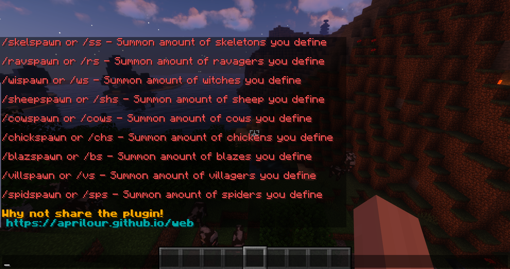

CreatureSpawn is a basic plugin that lets you spawn multiple of certain mobs. You can get a list of commands by using the command /creaturecommands
creaturespawn.use - The permission required to spawn mobs with the plugin.
CreatureSpawn image
Videos to do with CreatureSpawn